On sait, mais on ne fait pas
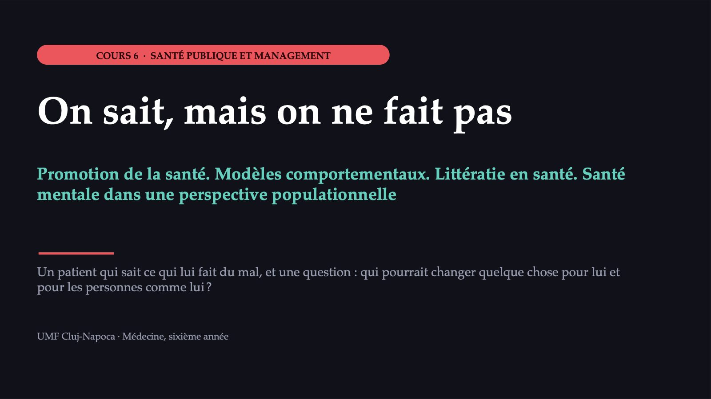
1 / 48M. Vasile, 56 ans
![LE CAS DU JOUR M. Vasile, 56 ans Son usine a fermé après 20 ans. Il fume un paquet par jour et sait que « le tabac donne le cancer ». LE KIT de recherche de sang occulte dans les selles, dans le tiroir depuis six mois DEPUIS QU’IL EST AU CHÔMAGE il dort mal, a maigri, ne sort plus : « ça ne sert plus à rien » SA FILLE, FUTURE MÉDECIN lui a envoyé un article sur le dépistage ; lui, une vidéo sur le « cancer provoqué par la coloscopie » Pourquoi ne fait-il pas ce qu’il sait devoir faire ? Cas construit ; valeurs hypothétiques.](diapozitive/C06/002.jpg) 2 / 48
2 / 48Pourquoi n’a-t-il pas fait le test ?
3 / 48Son problème n’est pas le manque d’information
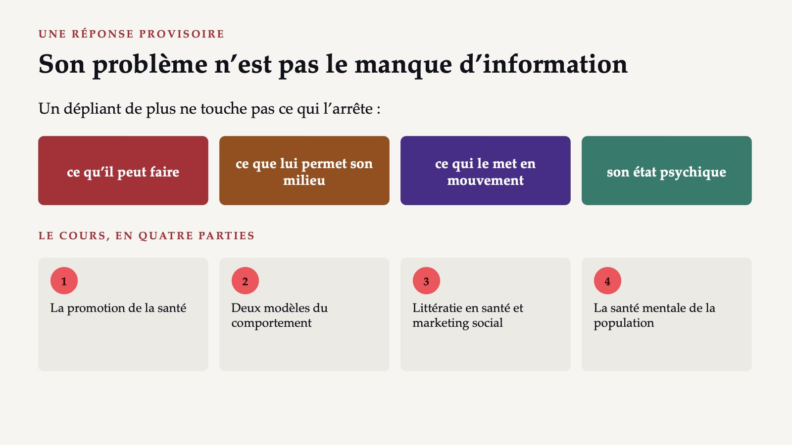
4 / 48La promotion de la santé : plus que l’information
![DU DÉPLIANT AUX POLITIQUES La promotion de la santé : plus que l’information Le processus qui permet aux gens d’accroître leur contrôle sur leur santé et de l’améliorer. L’ÉDUCATION POUR LA SANTÉ une partie de la promotion, non un synonyme : connaissances, motivation, littératie LA PRÉVENTION CLINIQUE part d’une maladie et du risque de la contracter LA PROMOTION DE LA SANTÉ part des conditions de vie : les déterminants sociaux, économiques et environnementaux Source : OMS, glossaire de la promotion de la santé, 2021.](diapozitive/C06/005.jpg) 5 / 48
5 / 48Ottawa, 21 novembre 1986
 6 / 48
6 / 48Ce que demande la Charte d’Ottawa
![CINQ DOMAINES D’ACTION Ce que demande la Charte d’Ottawa 1 Politique publique saine : des lois et des taxes qui facilitent le choix sain. 2 Milieux favorables : espaces sans fumée, villes où l’on marche. 3 Action communautaire : les communautés fixent leurs priorités. 4 Aptitudes individuelles : éducation et littératie en santé. 5 Réorienter les services : chaque consultation, l’occasion d’un bref conseil. Les deux premiers agissent sur tous, sans demander à chacun motivation ou temps. Source : OMS, glossaire de la promotion de la santé, 2021 ; OMS, « Tackling NCDs », 2024.](diapozitive/C06/007.jpg) 7 / 48
7 / 48Ce qui se fait et ce qui aiderait
8 / 48Milieux de vie et santé dans toutes les politiques
![L’ÉCOLE, LE TRAVAIL, LA VILLE Milieux de vie et santé dans toutes les politiques LE MILIEU DE VIE Le lieu de la vie quotidienne. L’approche n’utilise pas l’école pour un exposé : elle transforme l’école elle-même. LA SANTÉ DANS TOUTES LES POLITIQUES Tous les secteurs prennent en compte les effets de leurs décisions sur la santé et l’équité en santé. transports éducation logement taxes alimentation travail Le ministère de la santé ne décide pas ici : il faut l’engagement de tout le gouvernement. Source : OMS, glossaire de la promotion de la santé, 2021.](diapozitive/C06/009.jpg) 9 / 48
9 / 48La Charte de Genève pour le bien-être
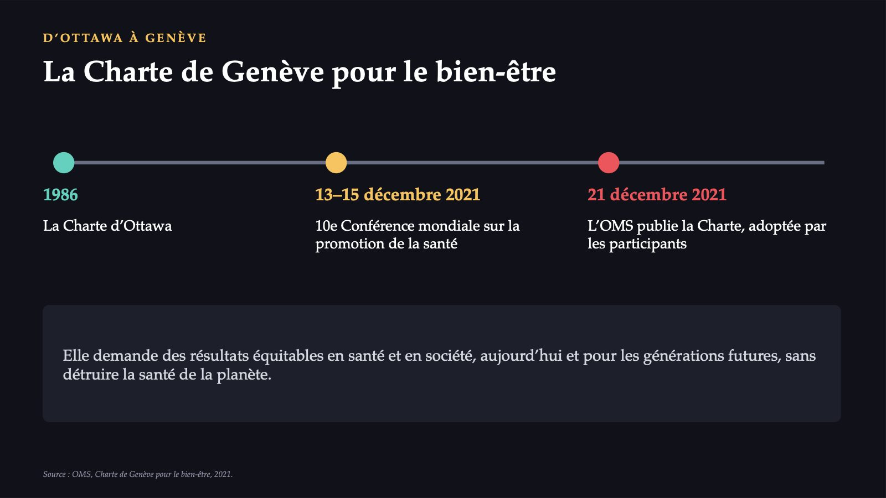
10 / 4830,8 %
![L’ÉCART ENTRE L’INTENTION ET LE COMPORTEMENT Où la chaîne se rompt l’information l’attitude l’intention le comportement M. Vasile sait que le tabac donne le cancer. L’intention peut exister. Le comportement ne suit pas. 30,8 % des hommes en Roumanie fumaient quotidiennement, en 2019 23,6 % la moyenne de l’Union européenne Le comportement dépend aussi des aptitudes, du milieu, des habitudes et des émotions. Source : Eurostat, enquête européenne par interview sur la santé (EHIS), 2019 ; Michie et al., 2011.](diapozitive/C06/011.jpg) 11 / 48
11 / 48Le modèle des croyances relatives à la santé
![PREMIER MODÈLE · CHAMPION ET SKINNER Le modèle des croyances relatives à la santé Six construits, sur le cas de M. Vasile : La vulnérabilité perçue « je n’ai rien, je n’ai mal nulle part » La gravité perçue la maladie serait-elle grave pour lui ? Les bénéfices perçus le test l’aiderait-il ? Les obstacles perçus la peur du résultat, la gêne, la vidéo sur la coloscopie Les signaux d’action le médecin qui insiste, un voisin malade, une lettre L’auto-efficacité croit-il pouvoir faire le test seul, chez lui ? Source : Lau et al., 2020.](diapozitive/C06/012.jpg) 12 / 48
12 / 4830
![CE QUE MONTRENT LES DONNÉES Une association n’est pas une cause 30 études transversales : la revue systématique de 2020, dépistage colorectal La vulnérabilité, les bénéfices et les signaux d’action étaient associés au dépistage ; les obstacles, inversement. LES LIMITES croyances et comportement, mesurés au même moment comportement déclaré, échantillons de convenance facteurs sociodémographiques et normes culturelles, seulement comme facteurs modificateurs Pour le milieu, le coût et les normes : un modèle plus large. Source : Lau et al., 2020.](diapozitive/C06/013.jpg) 13 / 48
13 / 48Capacité, opportunité, motivation
![DEUXIÈME MODÈLE · COM-B Capacité, opportunité, motivation Un comportement n’a lieu que lorsque la personne a la capacité et l’opportunité de l’adopter et qu’elle est plus motivée pour lui que pour tout autre comportement. West et Michie, 2020 C La capacité psychologique et physique : connaissances, aptitudes O L’opportunité les facteurs extérieurs qui rendent le comportement possible ou le déclenchent M La motivation les processus qui donnent énergie et direction au comportement, pas seulement les décisions conscientes Source : Michie, van Stralen et West, 2011 ; West et Michie, 2020.](diapozitive/C06/014.jpg) 14 / 48
14 / 48« Je veux arrêter » et la cigarette après le café
![LA MOTIVATION A DEUX COMPOSANTES « Je veux arrêter » et la cigarette après le café RÉFLEXIVE projets, évaluations, croyances sur les conséquences : « je veux arrêter » ÉMOTIONNELLE ET D’HABITUDE les réactions et les habitudes : la cigarette après le café Les flèches comptent : l’opportunité et la capacité influencent la motivation ; le comportement les modifie toutes. L’exemple des auteurs : la pratique de la conduite augmente la capacité, et celle-ci, l’envie de conduire. Source : West et Michie, 2020 ; Michie et al., 2011.](diapozitive/C06/015.jpg) 15 / 48
15 / 48La roue du changement de comportement
![L’ARTICLE DE 2011 La roue du changement de comportement COM-B neuf fonctions d’intervention sept catégories de politiques Sur 19 cadres de classification analysés, aucun ne couvrait tout. LES SEPT CATÉGORIES DE POLITIQUES • la communication et le marketing • les lignes directrices • les mesures fiscales • la réglementation • la législation • la planification de l’environnement • la prestation de services D’abord le diagnostic, ensuite l’intervention : si les gens savent déjà, l’éducation ne corrige rien. Source : Michie, van Stralen et West, 2011.](diapozitive/C06/016.jpg) 16 / 48
16 / 48Ce que peut faire une intervention
![NEUF FONCTIONS D’INTERVENTION Ce que peut faire une intervention L’éducation accroître la connaissance La persuasion susciter des émotions ou l’action L’incitation l’attente d’une récompense La contrainte l’attente d’un coût : le prix de l’alcool La formation transmettre des aptitudes La restriction des règles qui réduisent l’opportunité La restructuration de l’environnement : un message sur l’écran du médecin Le modelage un exemple à suivre L’habilitation soutien et médicaments pour le sevrage tabagique Source : Michie, van Stralen et West, 2011.](diapozitive/C06/017.jpg) 17 / 48
17 / 48Le test dans le tiroir
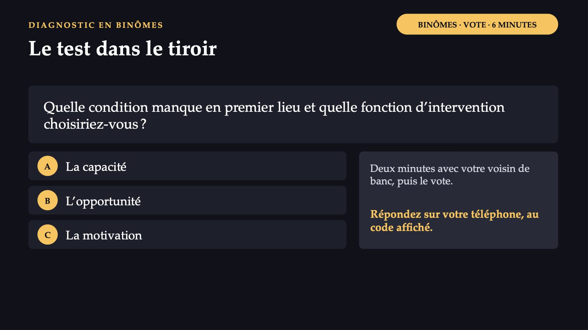
18 / 48Plusieurs conditions manquent à la fois
![UN DIAGNOSTIC POSSIBLE Plusieurs conditions manquent à la fois LA CAPACITÉ Pour le tabac, ce n’est pas le problème principal. Pour le test, elle peut manquer : il ne sait peut-être pas utiliser le kit. L’OPPORTUNITÉ Personne ne lui rappelle le kit, les cigarettes sont à portée de main, le traitement du sevrage est payant. LA MOTIVATION Automatique : la dépendance à la nicotine. Réflexive : affaiblie par le manque d’espoir. L’habilitation, la restructuration de l’environnement et, surtout, l’évaluation de son état psychique. Un dépliant ne corrige aucun déficit.](diapozitive/C06/019.jpg) 19 / 48
19 / 48L’article de la fille, la vidéo du père
![LA LITTÉRATIE EN SANTÉ L’article de la fille, la vidéo du père Comment jugeons-nous l’information sur la santé ? Les connaissances et les compétences qui permettent aux gens de trouver, de comprendre, d’évaluer et d’utiliser les informations et les services pour leur santé et celle de leur entourage. Elles sont médiatisées par les structures organisationnelles et par les ressources disponibles. Pas seulement l’affaire de l’individu : le gouvernement, la société civile et les services doivent rendre l’information fiable accessible. Source : OMS, glossaire de la promotion de la santé, 2021.](diapozitive/C06/020.jpg) 20 / 48
20 / 48Quatre opérations, trois domaines
 21 / 48
21 / 4847,6 %
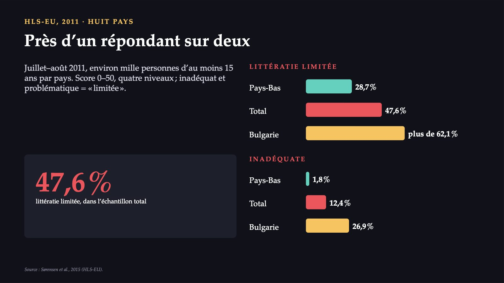
22 / 4817
![LA ROUMANIE Un chiffre qui manque HLS19 · NOVEMBRE 2019 – JUIN 2021 17 pays de la Région européenne de l’OMS 42 445 entretiens La Roumanie n’y a pas participé non plus ; le pourcentage de la Bulgarie ne se transpose pas. Comparer les pays avec prudence : méthodes différentes, plan transversal. LE GRADIENT SOCIAL Littératie limitée plus fréquente en cas de difficultés financières, de statut social bas, de faible instruction, d’âge avancé ; dans tous les pays, en 2019–2021. Source : résumé du rapport international HLS19, 2021 ; Sørensen et al., 2015.](diapozitive/C06/023.jpg) 23 / 48
23 / 48Les recommandations de l’enquête 2019–2021
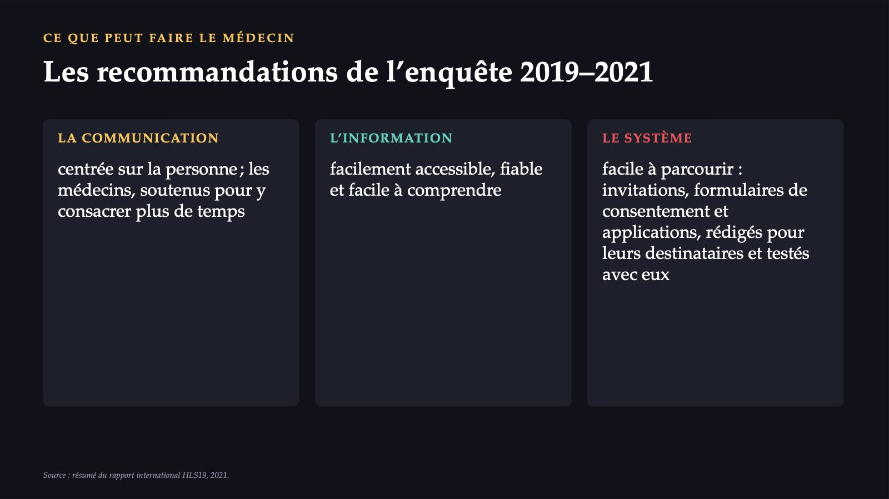
24 / 48Un message pour le kit du tiroir
![LE MARKETING SOCIAL Un message pour le kit du tiroir Les concepts du marketing, intégrés à d’autres approches, pour influencer des comportements bénéfiques aux individus et aux communautés. LE PRODUIT le comportement précis : « remplacez une boisson sucrée par jour par de l’eau » LE PRIX argent, temps, effort, plaisir perdu, gêne LA PLACE où et quand : un kit envoyé à domicile supprime le déplacement au cabinet LA PROMOTION le message et le canal, pour un public précis Pas une campagne d’affiches : un processus, de la recherche sur le public au test du message. Source : OMS, glossaire de la promotion de la santé, 2021.](diapozitive/C06/025.jpg) 25 / 48
25 / 48Quatre thèmes, des données vérifiées
![LES DONNÉES POUR L’ATELIER Quatre thèmes, des données vérifiées LA VACCINATION CONTRE LE VPH Parmi les interventions les plus coût-efficaces (OMS) : les filles de 9–14 ans, une ou deux doses. LE SEVRAGE TABAGIQUE Tabagisme quotidien des hommes, en 2019 : 30,8 % en Roumanie, 23,6 % dans l’Union européenne. LE DÉPISTAGE COLORECTAL Après cinquante ans. Les détails : dans le cours sur le dépistage. LA RÉDUCTION DU SEL Recommandées par l’OMS : la reformulation des aliments, l’étiquetage sur la face avant. Source : OMS, « Tackling NCDs » ; Eurostat, enquête européenne par interview sur la santé (EHIS), 2019.](diapozitive/C06/026.jpg) 26 / 48
26 / 48Concevez le message
 27 / 48
27 / 48Quel message vous convainc ?
28 / 48« Ça ne sert plus à rien »
![LA SANTÉ MENTALE DE LA POPULATION « Ça ne sert plus à rien » M. Vasile dort mal et a maigri. Un état de bien-être mental qui permet aux gens de faire face au stress de la vie, de réaliser leurs capacités, de bien apprendre et de bien travailler et de contribuer à la vie de la communauté. LE CLINICIEN DEMANDE le patient a-t-il un trouble et comment le traiter ? LA SANTÉ PUBLIQUE DEMANDE combien sont touchés, quel fardeau, qui n’accède pas aux soins ? Source : OMS, fiche « Mental health: strengthening our response ».](diapozitive/C06/029.jpg) 29 / 48
29 / 481,2 milliard
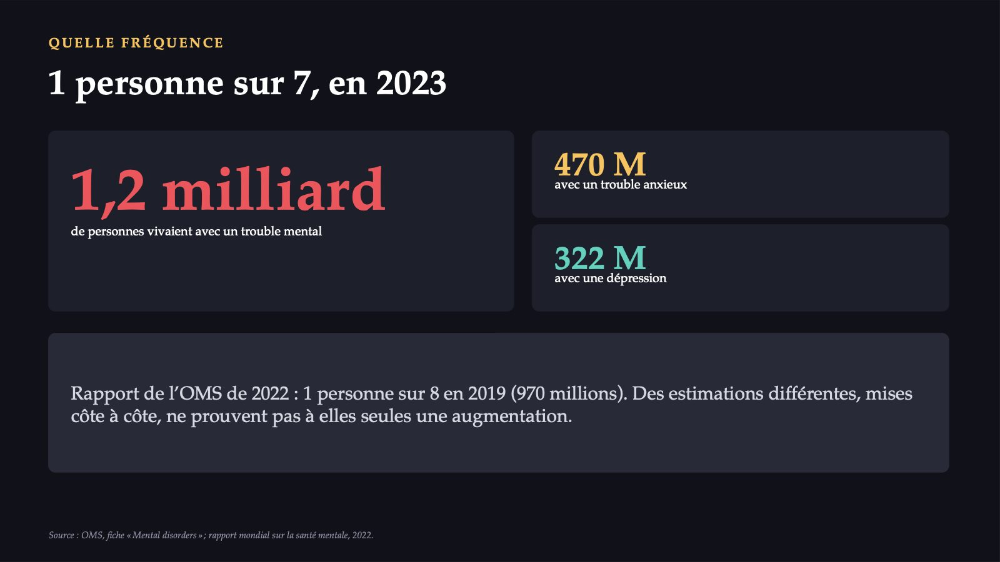
30 / 48Au moins deux semaines
 31 / 48
31 / 4815,6 %
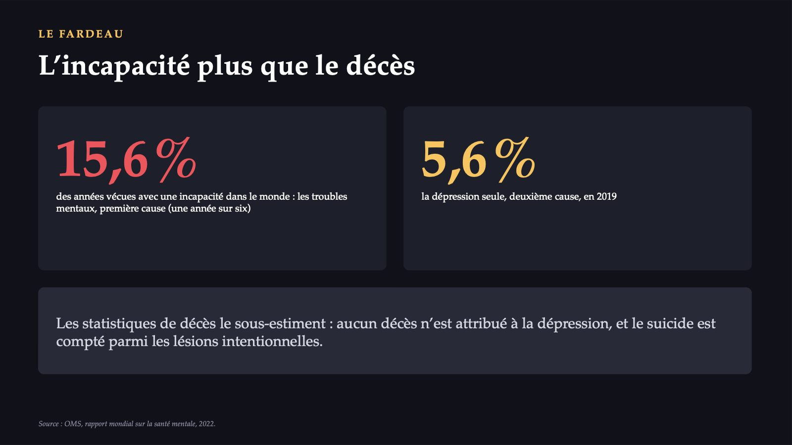
32 / 48Moins de symptômes déclarés. Pourquoi ?
![LA ROUMANIE : LES DONNÉES DÉCLARÉES Moins de symptômes déclarés. Pourquoi ? 4,1 % Roumanie 7,0 % UE Symptômes dépressifs actuels 2,0 % Roumanie 2,7 % UE Symptômes dépressifs majeurs TROIS EXPLICATIONS POSSIBLES 1 une fréquence plus faible 2 une déclaration plus rare : la stigmatisation, la manière de nommer les symptômes 3 une combinaison des deux Données déclarées dans un questionnaire, pas des diagnostics. L’enquête ne les sépare pas. Source : Eurostat, enquête européenne par interview sur la santé (EHIS), 2019.](diapozitive/C06/033.jpg) 33 / 48
33 / 48727 000
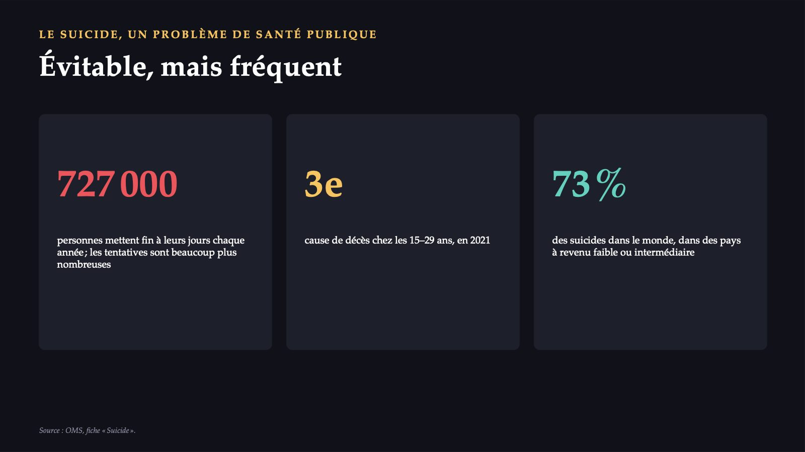
34 / 485,9 fois plus élevé chez les hommes
 35 / 48
35 / 4838
![LE SUICIDE PEUT ÊTRE PRÉVENU Quatre interventions LIVE LIFE 1 Limiter l’accès aux moyens : pesticides, armes à feu, certains médicaments. 2 Une couverture responsable des cas, avec les médias. 3 Les compétences socio-émotionnelles des adolescents. 4 Identifier, évaluer, prendre en charge et suivre précocement les personnes touchées. Les deux premières agissent sur toute la population, sans que personne ait à demander de l’aide. 38 pays déclarent une stratégie nationale de prévention du suicide Source : OMS, fiche « Suicide ».](diapozitive/C06/036.jpg) 36 / 48
36 / 48Universelle, dans toutes les cultures
 37 / 48
37 / 4840 %
![L’ÉCART DE TRAITEMENT Qui n’accède pas aux soins 40 % des personnes atteintes de psychose reçoivent des soins formels un tiers des personnes atteintes de dépression moins de 2 % des budgets de santé vont, en moyenne, à la santé mentale plus de 70 % des dépenses de santé mentale, dans les pays à revenu intermédiaire : les hôpitaux psychiatriques Les services de proximité restent sous-financés ; la stigmatisation tient les gens à l’écart même là où les services existent. Source : OMS, fiche « Mental disorders » ; rapport mondial sur la santé mentale, 2022.](diapozitive/C06/038.jpg) 38 / 48
38 / 48Quatre cibles pour 2030
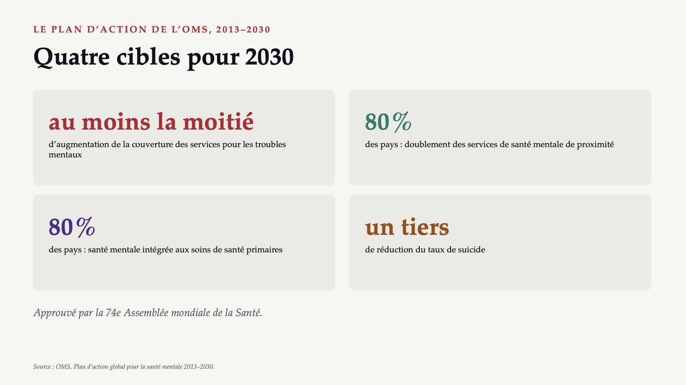
39 / 48De l’hôpital vers la communauté et le cabinet
![DEUX ORIENTATIONS De l’hôpital vers la communauté et le cabinet LA DÉSINSTITUTIONNALISATION Les États transfèrent les soins des hôpitaux psychiatriques de long séjour vers des services non spécialisés. L’INTÉGRATION DANS LES SOINS PRIMAIRES Le partage des tâches avec les soins de santé primaires réduit l’écart de traitement et accroît la couverture. Le premier qui peut reconnaître la dépression de M. Vasile : le médecin de famille qui lui a remis le kit. Source : OMS, plan d’action 2013–2030 ; rapport mondial sur la santé mentale, 2022.](diapozitive/C06/040.jpg) 40 / 48
40 / 48Une question directe
![LE RISQUE SUICIDAIRE · mhGAP Une question directe « Ça ne sert plus à rien » : posez directement la question des idées suicidaires. L’ÉVALUATION Chez toute personne avec un manque d’espoir extrême ou un trouble prioritaire (par exemple, la dépression) : les pensées, les projets, les actes d’automutilation. La question ne provoque pas l’automutilation. SI LE RISQUE EST IMMINENT éloigner les moyens d’automutilation environnement sûr : la personne n’est pas laissée seule, elle est surveillée consulter un spécialiste de santé mentale, là où il en existe maintenir le contact et le suivi Source : OMS, guide d’intervention mhGAP (la conduite détaillée : dans le guide).](diapozitive/C06/041.jpg) 41 / 48
41 / 48« I had a black dog »
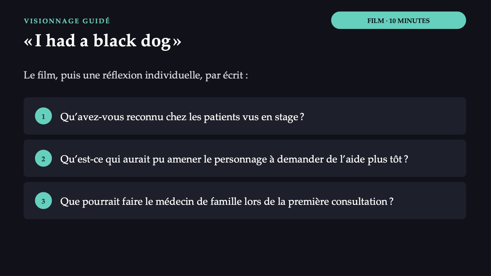
42 / 48Que faites-vous d’abord ?
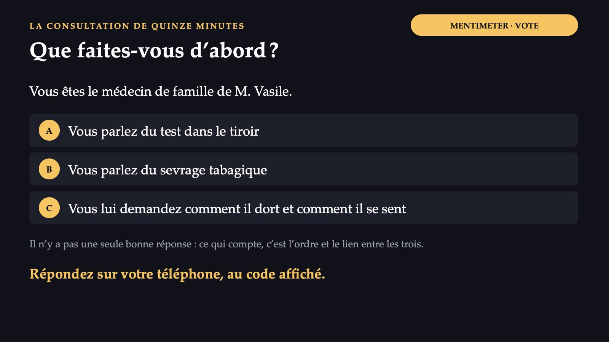
43 / 48Dix affirmations : vrai ou faux ?
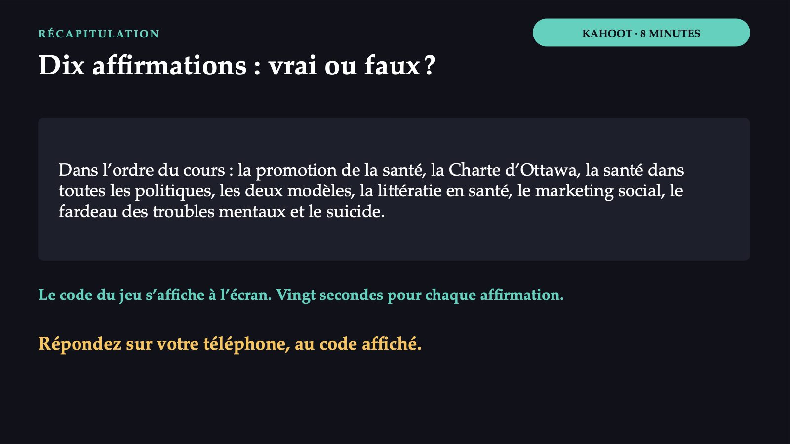
44 / 48Vrai ou faux : les réponses
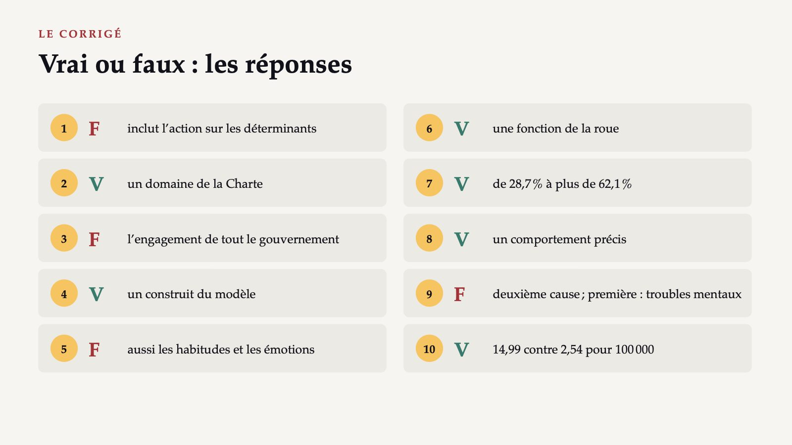
45 / 48Ce qui reste du cours d’aujourd’hui
![À RETENIR Ce qui reste du cours d’aujourd’hui 1 La promotion de la santé : plus de contrôle sur sa santé, par l’information et par les conditions de vie. 2 D’abord le diagnostic : la capacité, l’opportunité ou la motivation ; ensuite l’intervention. 3 La littératie en santé dépend aussi des institutions. 4 Près de la moitié, avec une littératie limitée en 2011 ; la Roumanie, dans aucune enquête. 5 Les troubles mentaux : première cause d’incapacité ; la plupart ne reçoivent pas de soins efficaces. M. Vasile n’a pas besoin d’information, mais de quelqu’un qui lui demande comment il va.](diapozitive/C06/046.jpg) 46 / 48
46 / 48Ce que vous faites autrement, lundi matin
![DÈS DEMAIN, EN TANT QUE MÉDECINS Ce que vous faites autrement, lundi matin 1 Le patient ne fait pas ce que vous lui avez recommandé ? N’insistez pas plus fort : demandez-vous ce qui lui manque, la capacité, l’opportunité ou la motivation. 2 Le patient semble seulement « fatigué » ? La dépression est une cause majeure d’incapacité ; la plupart ne reçoivent pas de soins. 3 Une question sur le sommeil et l’espoir peut être la première intervention ; la question directe sur le suicide ne provoque pas l’automutilation.](diapozitive/C06/047.jpg) 47 / 48
47 / 48Trois questions pour finir
48 / 48Flèches ou espace : navigation · O : vue d’ensemble · N : notes de l’intervenant · F : plein écran · Échap : fermer